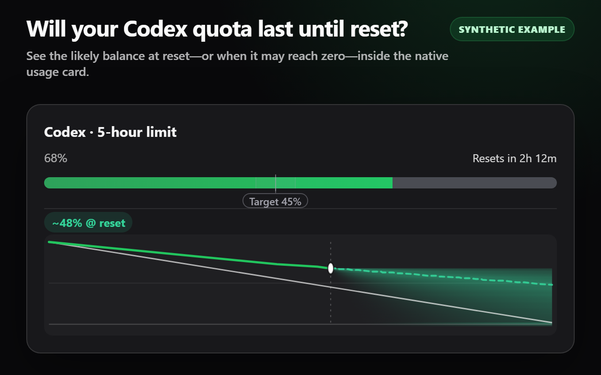
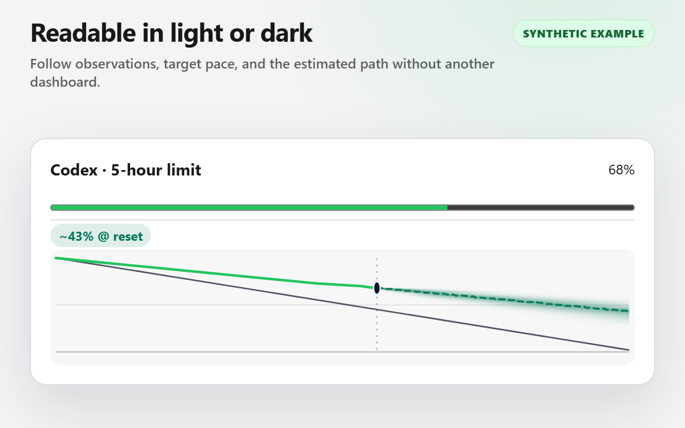
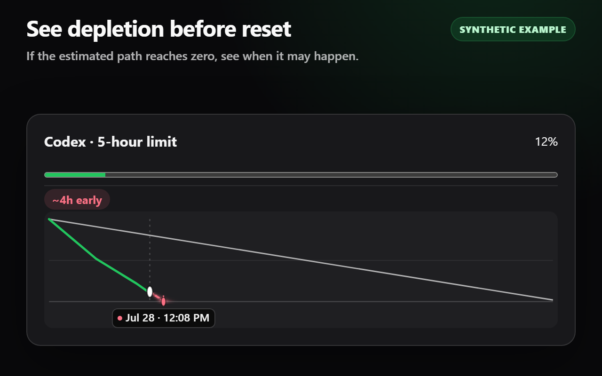
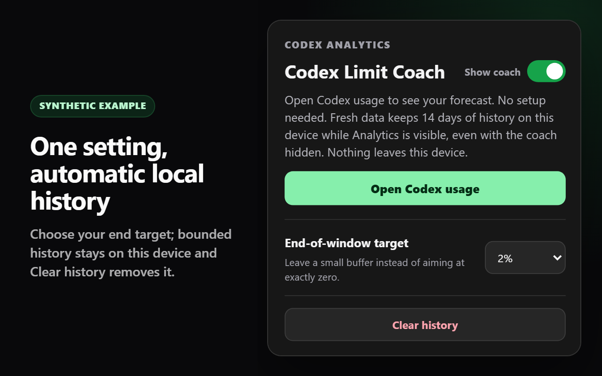

Outcome first
Each meter independently shows its estimated balance at reset or when it may reach zero. No card overrides another.
Will your Codex quota last until reset? Codex Limit Coach shows the estimated balance at reset, or when your quota may reach zero, beside each supported quota card on Codex Usage Overview.

1. Install the extension and open its popup. 2. Select “Open Codex usage” and sign in if needed. 3. View the forecast beside your supported quota cards. If Usage Overview was already open when you installed, reload it once.
Each meter independently shows its estimated balance at reset or when it may reach zero. No card overrides another.
Observed usage drives the forecast. Your target is a quiet reference used only to color the path against a fixed corridor.
Choose an end-of-window target. Bounded 14-day history is automatic, stays on this device, and can be cleared from the popup.
1. Install the extension and open its popup. 2. Select “Open Codex usage” and sign in if needed. 3. View the forecast beside your supported quota cards. If Usage Overview was already open when you installed, reload it once.




While the Codex usage page is open on Overview or Analytics, Codex Limit Coach passively observes the page's own successful quota parse. The packaged bridge accesses only base and additional quota-group identity, used percentage, window duration, and reset timing; each additional name becomes an opaque stable identifier. The isolated script associates meters with native rows through numeric progress and compatible reset metadata, never translated labels or card order. Settings and bounded history remain in chrome.storage.local.
The bridge initiates no request, independently parses no response, inspects no credentials or unrelated account fields, and transmits no quota data. The sole extension API permission is storage. Content scripts match direct and SPA navigation on https://chatgpt.com/codex/* and https://chatgpt.com/settings/usage*; runtime capture is limited to the two Usage tabs or the legacy usage view, and coaching renders on Overview or that legacy view. There is no background context, backend, telemetry, advertising, remote code, or Codex Limit Coach account system.
Codex Limit Coach is free on the Chrome Web Store.